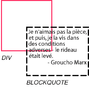
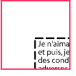
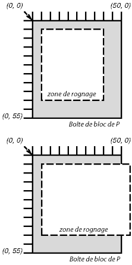

Sommaire
Généralement, le contenu d'une boîte de bloc est confiné entre les bords du contenu de celle-ci. Parfois, une boîte peut déborder, son contenu s'étalant en partie ou entièrement en dehors de la boîte. Des exemples :
À chaque fois qu'un débordement survient, c'est la propriété 'overflow' qui spécifie , s'il y a lieu, la façon dont la boîte sera rognée. La propriété 'clip' spécifie la taille et la forme de la zone rognée. Quand on spécifie un rognage laissant une petite surface, des contenus qui seraient visibles autrement peuvent disparaître.
| Valeur : | visible | hidden | scroll | auto | inherit |
| Initiale : | visible |
| S'applique à : | ceux des éléments de type bloc et ceux remplacés |
| Héritée : | non |
| Pourcentage : | sans objet |
| Médias : | visuel |
Cette propriété spécifie si le contenu d'un élément de type bloc doit être rogné quand celui-ci déborde de la boîte de cet élément (qui se comporte comme un bloc conteneur). Les significations des valeurs sont :
Même quand la valeur de la propriété 'overflow' est 'visible', il peut arriver que le contenu soit rogné par le système d'exploitation, pour tenir dans la fenêtre du document de l'agent utilisateur.
Considérons le bloc de citation suivant (BLOCKQUOTE), trop grand pour tenir dans son bloc conteneur (établi par un élément DIV). En voici le document source :
<DIV> <BLOCKQUOTE> <P>Je n'aimais pas la pièce, et puis, je la vis dans des conditions adverses - le rideau était levé. <DIV class="attributed-to">- Groucho Marx</DIV> </BLOCKQUOTE> </DIV>
Et ici, la feuille de style régissant les tailles et le style des boîtes générées :
DIV { width : 100px; height: 100px;
border: thin solid red;
}
BLOCKQUOTE { width : 125px; height : 100px;
margin-top: 50px; margin-left: 50px;
border: thin dashed black
}
DIV.attributed-to { text-align : right; border: none; }
La propriété 'overflow' ayant la valeur initiale 'visible', l'élément BLOCKQUOTE ne sera pas rogné lors de sa mise en forme, donnant quelque chose comme ceci :
 [D]
Si, par ailleurs, on donne la valeur 'hidden' à la propriété 'overflow' de l'élément DIV, l'élément BLOCKQUOTE sera rogné par le bloc conteneur, ainsi :
 [D]
La valeur 'scroll' aurait signifié, à ceux des agents utilisateurs l'implémentant, de faire apparaître un mécanisme de défilement pour que les utilisateurs puissent accéder au contenu de la partie ayant été rognée.
Une zone de rognage définit la partie du contenu rendu d'un élément qui est visible. Par défaut, la zone de rognage a la même taille et forme que la boîte, ou les boîtes, de l'élément. Cependant, celle-ci peut être modifiée à l'aide de la propriété 'clip'.
La propriété 'clip' s'applique aux éléments dont la valeur de la propriété 'overflow' est autre que 'visible'. Les significations des valeurs sont :
« errata : Voir la proposition pour une nouvelle définition des valeurs de rect() »
Les valeurs <haut>, <droite>, <bas>, et <gauche> peuvent être une valeur de <longueur> ou bien 'auto'. Les valeurs négatives sont admises. La valeur 'auto' fait correspondre un bord donné de la zone de rognage à celui de la boîte générée par l'élément (c.à.d. la valeur 'auto' a la même signification que '0').
Avec des coordonnées ayant des valeurs en pixels, il faudrait faire attention à ce qu'aucun pixel ne reste visible quand la somme de <gauche> et <droite> est égale à la largeur de l'élément (et de même, pour la somme de <haut> et <bas> avec la hauteur de l'élément), et inversement, à ce qu'aucun pixel ne reste caché quand leurs sommes sont nulles.
Les ancêtres de l'élément peuvent aussi avoir des zones de rognage (quand leur propriété 'overflow' n'a pas la valeur 'visible' ; c'est l'intersection des diverses zones de rognage qui est rendue.
Si la zone de rognage excède les limites de la fenêtre du document de l'agent utilisateur, son contenu peut se trouver rogner par la fenêtre, en fonction du système d'exploitation.
Ces deux règles :
P { clip: rect(5px, 10px, 10px, 5px); }
P { clip: rect(5px, -5px, 10px, 5px); }
celles-ci vont créer les zones de rognage rectangulaires, matérialisées par les lignes en pointillés dans leurs illustrations respectives suivantes :
 [D]
Note En CSS2, toutes les zones de rognage sont rectangulaires. Il faut s'attendre à ce que les évolutions ultérieures autorisent des formes qui ne soient pas rectangulaires.
| Valeur : | visible | hidden | collapse | inherit |
| Initiale : | |
| S'applique à : | tous les éléments |
| Héritée : | |
| Pourcentage : | sans objet |
| Médias : | visuel |
La propriété 'visibility' spécifie le rendu, ou non, des boîtes générées par un élément donné. Ces boîtes, bien qu'invisibles, influencent toujours la mise en forme du document (utiliser la propriété 'display' avec la valeur 'none' pour prohiber la génération d'une boîte, et ainsi toutes influences sur la mise en forme). Les valeurs ont les significations suivantes :
On peut employer cette propriété conjointement avec des scripts pour créer des effets dynamiques.
Dans l'exemple suivant, quand on presse l'un ou l'autre bouton du formulaire, un script actionné par un utilisateur provoque l'apparition de la boîte qui lui correspond et, en même temps, la disparition de l'autre. Ces boîtes conservant leur taille et leur emplacement, l'effet produit le remplacement de l'une par l'autre (le script, écrit dans un langage hypothétique, pouvant, ou non, produire un effet avec un agent utilisateur conforme).
<!DOCTYPE HTML PUBLIC "-//W3C//DTD HTML 4.0//EN">
<HTML>
<HEAD>
<STYLE type="text/css">
<!--
#conteneur1 { position: absolute;
top: 2in; left: 2in; width: 2in }
#conteneur2 { position: absolute;
top: 2in; left: 2in; width: 2in;
visibility: hidden; }
-->
</STYLE>
</HEAD>
<BODY>
<P>Choose a suspect:</P>
<DIV id="conteneur1">
<IMG alt="Al Capone"
width="100" height="100"
src="suspect1.jpg">
<P>Nom : Al Capone</P>
<P>Résidence : Chicago</P>
</DIV>
<DIV id="conteneur2">
<IMG alt="Lucky Luciano"
width="100" height="100"
src="suspect2.jpg">
<P>Nom : Lucky Luciano</P>
<P>Résidence : New York</P>
</DIV>
<FORM method="post"
action="http://www.suspect.org/process-bums">
<P>
<INPUT name="Capone" type="button"
value="Capone"
onclick='show("conteneur1");hide("conteneur2")'>
<INPUT name="Luciano" type="button"
value="Luciano"
onclick='show("conteneur2");hide("conteneur1")'>
</FORM>
</BODY>
</HTML>